This report describes OS Tutor, a tutor for Operating Systems built on Qwen3-4B-Instruct-2507 and fine-tuned with QLoRA on 11,760 curated training rows. The model is surrounded by three supporting components. Verified simulators compute the answer to every numerical problem, a retrieval (RAG) layer grounds concept explanations in course notes and cites them, and a fact checker corrects known misconceptions. On a 57-item hand-written problem suite the complete system scores 57/57, compared with 30/57 for the untuned model, and on a 600-item out-of-distribution holdout it scores 98.8%.
The RAG layer is built and connected to the tutor, and runs over a corpus of 105 documents: our professor's 42 course documents (lecture slides, assigned textbook chapters, handouts and lab material) plus openly licensed OS texts (Hailperin's Operating Systems and Middleware and 55 Wikipedia articles). On 124 labelled questions the correct passage is in the top five results 79.0% of the time, and retrieval takes 8.3 ms (95th percentile) on the CPU. Answers cite their sources and say so when the course materials do not cover a question. On a 200-question theory test, retrieval did not change accuracy (92.0% with it, 93.0% without).
The report follows the order of the work: the datasets, how they were preprocessed, the implementation with code screenshots, the measured results, the problems we ran into, and what we would do differently.
Every number in this report was produced by a script in the project repository; Appendix B lists the file each one comes from. Three points need to be kept in mind when reading them.
unreviewed in the data files.Three statements in our earlier documents are corrected here and explained in Section 5. No training artifact contains a "final training loss of 0.2710". The gain on the adjacent computer-science subjects is not statistically significant (p = 0.20), so it cannot be called transfer. And once the grader was fixed, the adapter's gain on the problem suite without the solver is not significant either (p = 0.56).
The training set is ostutor-sft v3.0.0. It is built by one command (python -m ostutor.build, seed 42, about 6 minutes), and two consecutive builds are byte-identical. It has five categories, each serving one behaviour the tutor needs:
| Category | Share | Rows | What it is | Where it comes from |
|---|---|---|---|---|
| Procedural | 64% | 7,526 | Worked OS numericals, every decision written as a rule plus the comparison behind it. 39 question types, 8 families. | Our own simulators (verified), plus clarification items where an input is missing |
| Replay | 16% | 1,884 | General instructions: the anti-forgetting anchor | Tülu 3 SFT mixture, SmolTalk2 (no-think) |
| Tutoring | 8% | 938 | Socratic replies to a student's wrong attempt | MathDial teacher moves (375); own OS dialogues (563) |
| Shell | 6% | 707 | Natural language → bash, each command passes bash -n | tldr, NL2Bash (MIT), InterCode, NL2SH-ALFA |
| Conceptual | 6% | 705 | Concept explanations | Self-distilled answers to a 295-question bank in 4 wordings, plus hand-written gold |
| Total (train) | 100% | 11,760 | plus 240 validation and 600 out-of-distribution rows | |
Source: DATASET_CARD.md, reports/manifest.json. Train SHA-256 f56a7113…477d.
Procedural families: CPU scheduling 1,733 (FCFS, SJF, SRTF, RR, priority, preemptive priority, HRRN); formula 1,530 (11 kinds: EAT, multilevel paging, deadlock minimum, fork count, …); deadlock / Banker's 1,070; page replacement 990 (FIFO, LRU, OPT, CLOCK); disk scheduling 990 (FCFS, SSTF, SCAN, LOOK, C-SCAN, C-LOOK); contiguous allocation 536; address translation 382; clarification 295.
Why generated data for procedures. A simulator-generated problem has a correct answer by construction, and the team can produce as many as needed at any size. Scraped worked solutions carry their authors' arithmetic slips, and nothing checks them.
Licensing. Every training row is commercially licensed: MIT 8,991 · ODC-BY-1.0 959 · mixed-permissive 925 · CC-BY-4.0 885. Three sources were excluded on licence grounds. ostep-homework has no licence and is used only as an offline test oracle. ceval/ceval-exam is CC BY-NC-SA and is used for evaluation only. AnishJoshi/nl2bash-custom has no licence.
| Set | Items | Measures | Graded by |
|---|---|---|---|
| Hand-written OS problem suite | 57 | Procedural correctness on free-worded textbook-style problems, 19 kinds | Simulator-exact grader (harness.py) |
| OOD holdout | 600 | Problems in framings never used in training; extraction, delegation, correctness | Simulator-exact; parameters compared field by field |
| General MMLU | 400 | Catastrophic forgetting: general knowledge | Log-likelihood of the four options |
| Adjacent CS (MMLU CS subjects) | 300 | Forgetting or transfer in nearby subjects | Log-likelihood |
| OS theory MCQ | 70 | Declarative OS knowledge | Log-likelihood of the four options |
| OS theory MCQ, expanded | 200 | The 70 above plus 130 new items on topics they miss (IPC, real-time scheduling, allocators, SSDs, file systems, protection, virtualisation) | Generated letter; used for the RAG experiment (Section 4.8) |
| Fact-checker probes | 10 | One question per misconception rule | Manual read of each answer (status unreviewed) |
| Retrieval questions | 164 | 124 questions labelled with the document and an evidence phrase from the answering passage (75 answered by course material, 49 by online texts) and 40 questions the corpus does not cover; split in half into dev and test | Recall@k, MRR, abstention |
Every training row was decontaminated against all 4,836 evaluation items before selection (Section 2.2).
The knowledge base is the directory data/rag/corpus/. Its manifest.json records, for every document, the source, the owner, the licence or permission, the date it was added and a SHA-256 checksum. Ingestion refuses the whole corpus if any of this is missing, if a file has changed since it was recorded, or if a file is present without a manifest entry.
| Part | Documents | Chunks | Contents | Licence / permission |
|---|---|---|---|---|
| Course material from our professor | 42 | 827 | Lecture slides (introduction, processes, limited direct execution, scheduling, MLFQ, proportional share, multiprocessor scheduling, segmentation, paging, page tables, virtual memory, demand paging, locks, semaphores, condition variables, concurrency bugs, threads, memory allocation), nine assigned OSTEP chapters, handouts (deadlock, paging problems, IPC, readers-writers, dining philosophers) and lab material (Unix commands, shell programming) | Supplied by the project owners for use in this tutor; not for redistribution |
| Hailperin, Operating Systems and Middleware, rev. 1.3.1 | 8 | 1,956 | The OS chapters: introduction, threads, scheduling, synchronisation and deadlocks, virtual memory, processes and protection, files, security | CC BY-SA 3.0 |
| Wikipedia | 55 | One article per OS topic, from the operating system and system call to inodes, the FAT, disk scheduling and DMA | CC BY-SA 4.0 | |
| Total | 105 | 2,783 | ||
Source: data/rag/corpus/manifest.json; per-document chunk counts from python -m ostutor.rag.ingest data/rag/corpus.
The professor's material came as one archive of 54 files. Twelve were left out, each with its reason recorded in the manifest: three byte-identical copies, four diagram images with no text, an Office lock file, the assignment brief, two PDF versions of handouts that were also supplied as Word files, and one legacy Word file that Office could not convert automatically. The online texts were added because the course material leaves gaps, for example file-system implementation and disk scheduling. Only text whose licence allows reuse with attribution was used. OSTEP is free to read but not openly licensed, so only the chapters the professor supplied are included. Each online document is fixed to an exact version: a git commit for the book and a revision number for each Wikipedia article.
ostutor/build.py runs every stage in order. It writes each stage's statistics to reports/manifest.json and fails the build if any release gate fails.
| # | Stage | What it does | Rows after |
|---|---|---|---|
| 1 | Ingest | 31 source files, line-level provenance (file + row index) on every row | 80,732 |
| 2 | Analyse | Each candidate cleaning rule is tested against the data before adoption; some were rejected on evidence | 80,732 |
| 3 | Clean / scrub / repair | Refusals, degenerate repetition, non-Latin replay, bash syntax errors and answer-revealing tutor turns dropped; PII redacted (card numbers Luhn-checked); rows with credentials destroyed | 70,170 |
| 4 | Deduplicate | −656 exact (blake2b) · −1,133 near (MinHash LSH, Jaccard 0.80) | 68,381 |
| 5 | Decontaminate | −643 against 4,836 eval items (distinctive 13-grams; exact parameter fingerprints, which caught 15 reworded leaks) | 67,738 |
| 6 | Score | Category-specific quality scorer | — |
| 7 | Select gold | Quality floor → identity dedup (fingerprint or embedding) → k-centre diversity → weighted family waterfill | 12,000 |
| 8 | Render | The model's own chat template, one system prompt per (mode, domain) | 12,000 |
| 9 | Split, then order | 11,760 / 240 / 600; rectifier interleaving and spaced replay on the train split | 11,760 |
| 10 | Verify | Every ordering invariant re-checked on the rows actually shipped | — |
| 11 | Release gates | 19 gates; all must pass | 19/19 |
Rows after stages 4 and 5 are computed from the removal counts in the dataset card.
reports/analysis/. Two bugs found this way are described in Section 5: a tutoring threshold that silently dropped all 1,508 OS tutoring rows, and a decontamination key that removed 58% of the tutoring rows.<think> blocks, no non-commercial rows, schema validity, token p99 ≤ 16,384 (measured 2,753; longest row 11,648, so nothing is truncated), rectifier invariants, mixture drift, distinct-answer ratio, template share, diversity, OOD holdout present, procedural inputs complete, and OS tutoring present.| Step | Choice | Why |
|---|---|---|
| Convert legacy formats | Fourteen .ppt files converted to .pptx with PowerPoint itself (tools/convert_office_legacy.ps1) | The extractor reads the modern formats; Office converts its own files losslessly |
| Extract with structure | Slides become "Slide N: title"; Word headings stay headings; PDF pages become sections, with large-font lines promoted to headings; the Hailperin LaTeX source is converted with pandoc | A citation must name a place a student can find: a slide, a page, a section |
| Remove running headers | A PDF line that appears on at least a third of the pages is dropped | The OSTEP chapters print the book name and page header on every page, which was being glued into the middle of passages |
| Normalise text | Unicode NFKC, which turns the typographic ligature "fi" back into "fi" | Otherwise a student typing "file" never matches "file" in a typeset PDF |
| Validate the manifest | Source, owner, date, checksum and licence or permission per document; unlisted or changed files refuse the corpus | The brief requires provenance and permission for every document |
| Split by heading | Each heading starts a section; the chunk carries its document title and the full heading path | The citation then reads, for example, "Synchronization and Deadlocks — Deadlock › The Deadlock Problem" |
| Window long sections | ≤ 180 words per chunk with a 30-word overlap | One idea per chunk; a sentence cut at a boundary is still whole in one of the two chunks |
| Lexical index | Lower-case alphanumeric tokens, a short stop-word list, BM25 (k₁ = 1.5, b = 0.75) | Exact OS terms (TLB, inode, Belady) matter |
| Dense index | all-MiniLM-L6-v2 (Apache-2.0, 22M parameters), normalised embeddings of section + text, loaded from the local cache only | Catches paraphrase; runs on the CPU; no query leaves the machine |
| Integrity | SHA-256 over every chunk id, title, section and text; embeddings cached under that hash | Every evaluation names the exact corpus it ran on, and a restart does not re-embed |
The 105 documents give 2,783 chunks (median 180 words). A full build takes about 46 s on the CPU, and reloading an unchanged corpus takes about 7 s, most of it loading the embedding model.
The code figures below show the source files as they appear in VS Code, with the file name and line numbers visible in each one. The same code is reproduced as text in Appendix A. The terminal screenshots show the output of the commands named in them.
| Layer | Component | Runs on |
|---|---|---|
| Weights | llama.cpp b11050 · Q8_0 base GGUF + v3 LoRA (f16) applied at runtime · port 8081 | RTX 4060 Laptop (8 GB) |
| Logic | serve/gateway.py (FastAPI): routing, solver, retrieval, fact checking, loop guard, trained prompts · port 8090 | CPU |
| Retrieval | ostutor/rag/: corpus loader, BM25, MiniLM, rank fusion, abstain gate, citations | CPU |
| UI | Open WebUI 0.11.3, local only · port 3000 | CPU |
Stages 3–5 of the build. Each stage writes its statistics into the manifest and prints what it removed, so a regression shows up as a changed count.
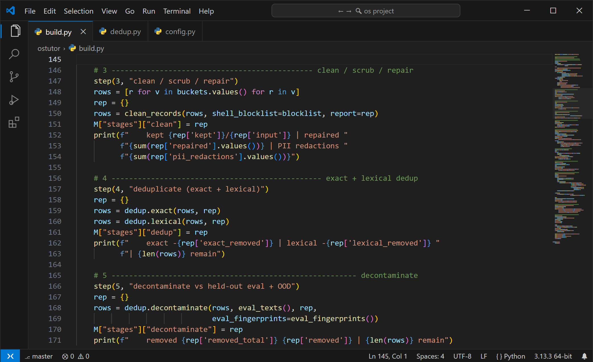
ostutor/build.py: cleaning, deduplication and decontamination stages.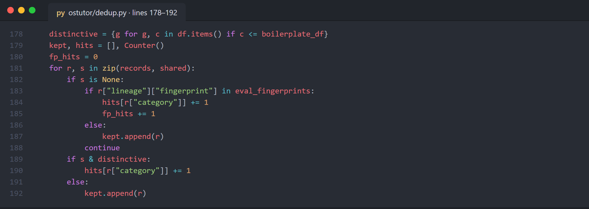
QLoRA via Unsloth on Kaggle's free tier: 2 × Tesla T4 with DDP (torchrun --nproc_per_node=2), 735 optimiser steps, 3.5 hours. The settings and the reason for each:
| Setting | Value | Why |
|---|---|---|
| Base model | Qwen3-4B-Instruct-2507 (Apache-2.0), non-thinking | Visible numbered steps for students; fits 16k-token QLoRA on a T4; 14B+ cannot train at 16k on free hardware or serve fast on 8 GB |
| LoRA | r = 32, α = 64, all linear layers, dropout 0.05 | LoRA bounds weight drift (forgets less than full fine-tuning) |
| Learning rate / schedule | 1e-4, cosine, 3% warm-up, 1 epoch | v2.2's second epoch memorised more |
| Sequence length | 16,384, no packing | Longest row 11,648; packing would break the ordering |
| Precision / optimiser | fp16, adamw_8bit, NEFTune α = 5 | T4 (Turing) has no bf16 |
| Loss | Assistant tokens only | Learn to answer, not to echo the question |
| Checkpoint | Best validation loss, evaluated ~every 8% of steps | The OOD loss is logged but never used to select a checkpoint |
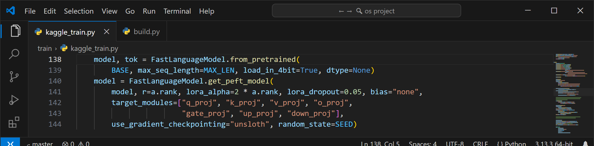
train/kaggle_train.py: the 4-bit base and the LoRA adapter on all seven projection matrices.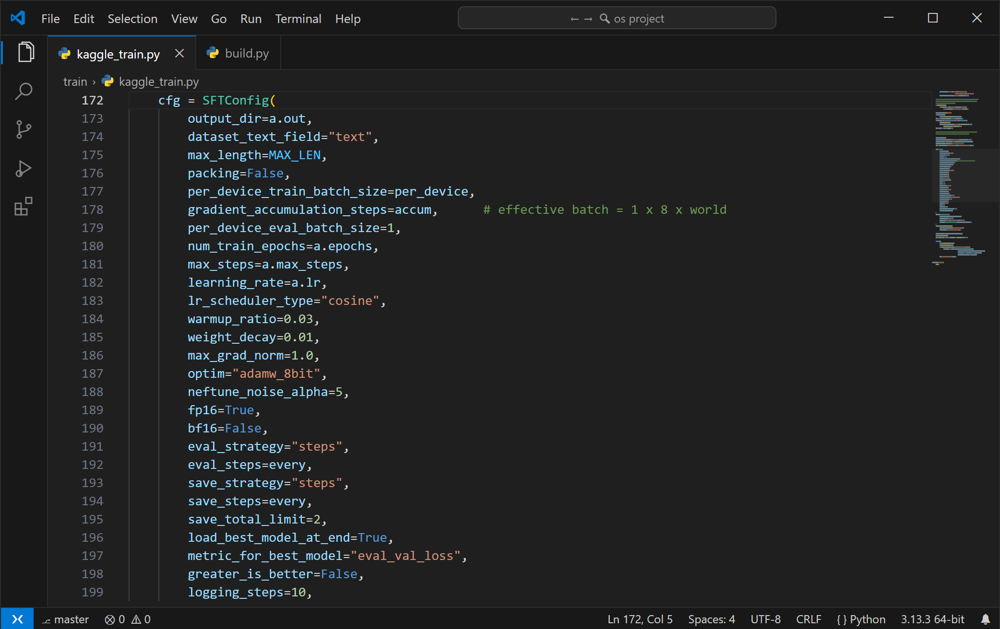
The model never carries out a procedure. It reads the question into typed JSON. This step runs on the untuned base at LoRA scale 0, which reads more reliably: 84% extraction accuracy against 79% for the adapter. Every extracted number must then appear in the question. Grounded parameters go to a simulator, which computes the answer; anything ungrounded falls back to the model.
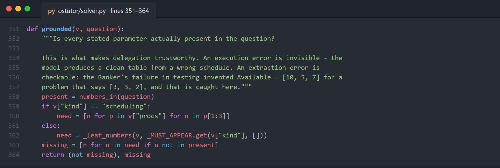
ostutor/solver.py: the grounding check, which makes delegation trustworthy. It caught an invented Banker's Available vector [10, 5, 7] for a problem stating [3, 3, 2].The pipeline has four files. extract.py turns PDF, PPTX, DOCX, Markdown and text into Markdown whose headings are the citation anchors. corpus.py validates the manifest and cuts the documents into citable chunks. retrieve.py ranks the chunks, decides whether any of them are relevant, and builds the prompt. ingest.py is the command the course staff use to add material (add) and rebuild the index.
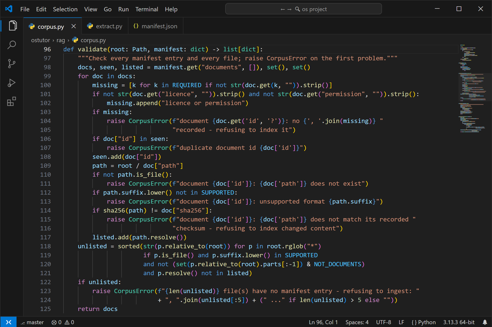
ostutor/rag/corpus.py: manifest validation. A missing field, a changed checksum or an unlisted file refuses the whole corpus.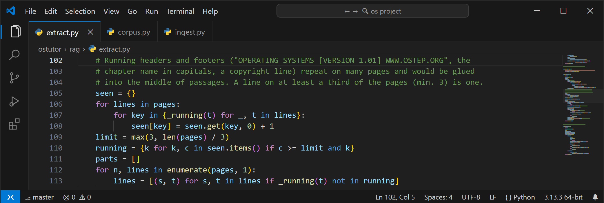
ostutor/rag/extract.py: lines repeated on a third of a PDF's pages are running headers and are dropped.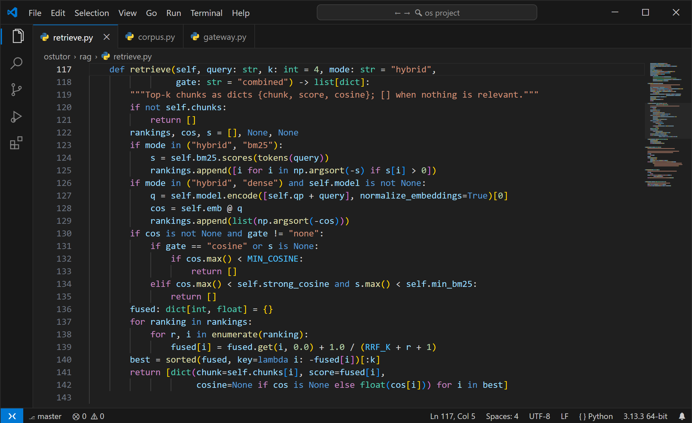
ostutor/rag/retrieve.py: BM25 and dense rankings, the abstain gate, and reciprocal-rank fusion (k = 60; Cormack et al., SIGIR 2009).The abstain gate. A passage that is only the least-bad match is worse than no passage, because the model would cite it as support. The gate keeps the passages if either signal is strong: the best dense similarity, or the best BM25 score. BM25 scores grow with the size of the corpus, so the two thresholds are fitted for each corpus. For the course corpus they are cosine ≥ 0.59 or BM25 ≥ 18.5, fitted on the dev half of the questions only (Figure 14).
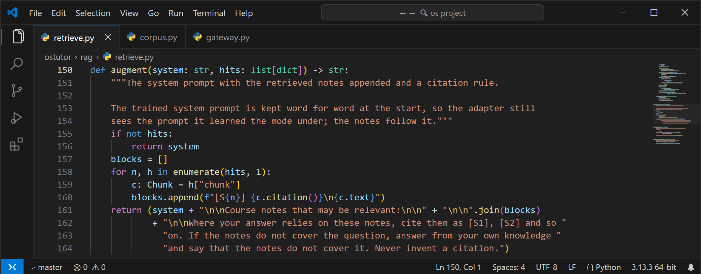
Retrieval is layer 2 of the gateway. It runs after the simulator layer, so a solvable problem is still computed and retrieval is not even consulted for it (a gateway test checks this). It runs before the fact checker, which checks the grounded draft. Only explain and analyze retrieve. Tutor mode never does, because a passage could state the answer the student is working towards. Retrieval is switched on by OSTUTOR_RAG=data/rag/corpus; a gateway started without it behaves exactly as before. Answers end with a "Sources from your course notes" list. When the gate abstains, they end instead with "Not found in the course materials", so general knowledge is never passed off as course content.
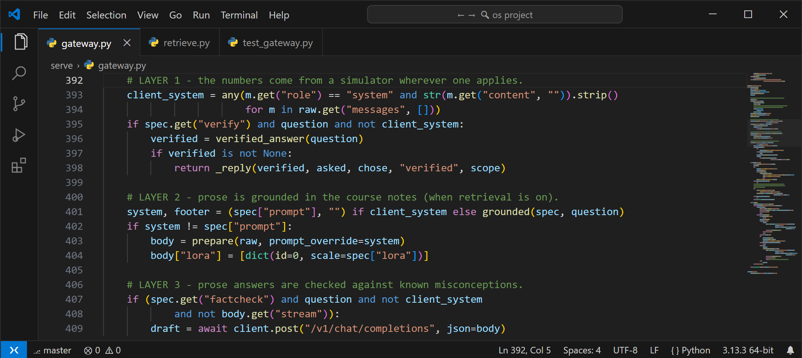
serve/gateway.py: layer 1 is the simulator, layer 2 retrieval, layer 3 the fact checker.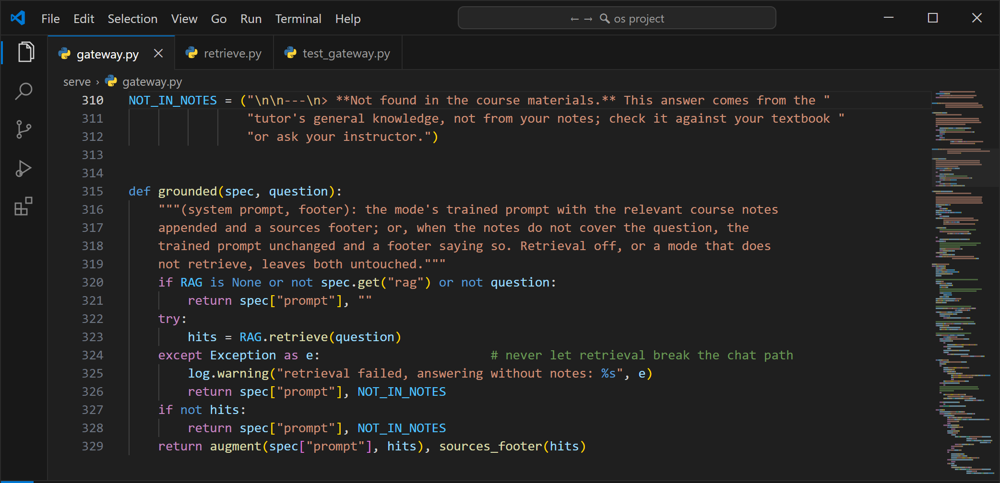
serve/gateway.py: the prompt and footer for a question, including the notice when the course materials do not cover it.Every comparison in the project is paired: the same items are scored under two configurations. The right test for a paired yes/no outcome is McNemar's, and with 5–30 discordant items the exact binomial form is needed.
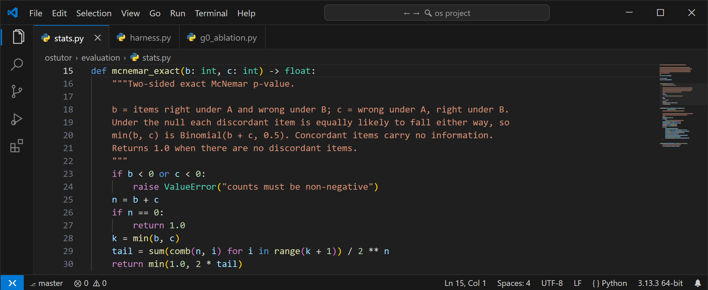
ostutor/evaluation/stats.py: the exact two-sided McNemar test used for every p-value in Section 4.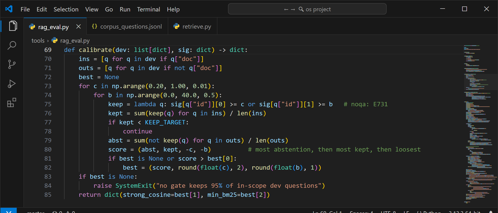
tools/rag_eval.py: the gate is fitted on the dev questions only. It must keep notes for at least 95% of in-scope questions, and among those settings it withholds notes from the most off-topic ones. It is then reported on the test half.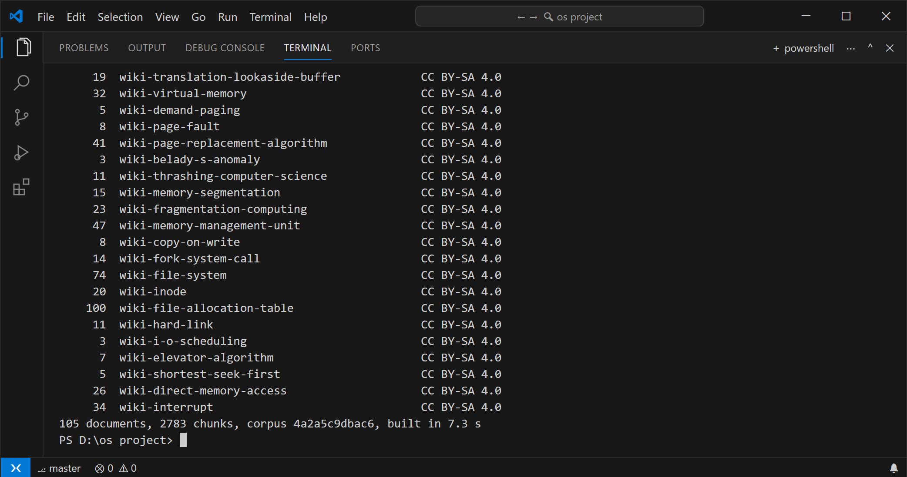
python -m ostutor.rag.ingest data\rag\corpus: chunks per document, then the corpus total.Four test suites need no GPU: tools/test_pipeline.py (data pipeline), tools/test_router.py (28 labelled routing cases, 0 misroutes allowed on shown attempts), tools/test_g0.py (55 checks on statistics, extraction scoring, grader regressions and the one-adapter guard), and tools/test_rag.py (46 checks). The gateway suite grew from 28 to 37 checks.
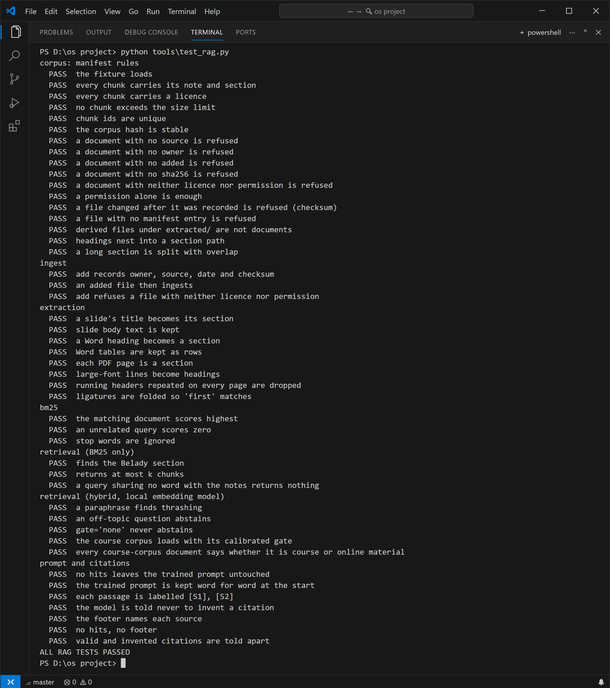
tools/test_rag.py: 46/46 checks, covering the manifest rules, checksum and unlisted-file refusal, extraction of slides, Word and PDF, retrieval, the gate, the prompt and citations.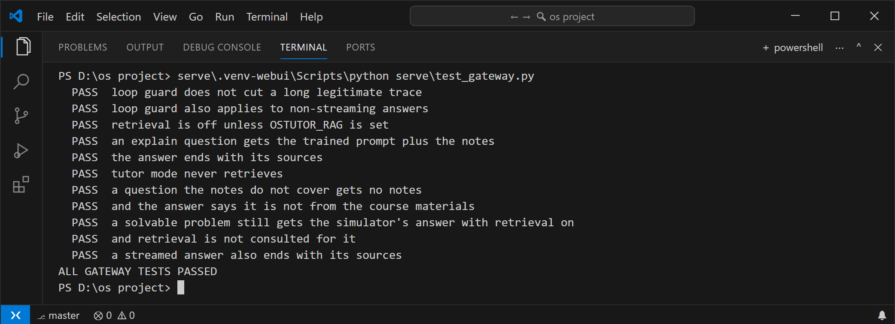
serve/test_gateway.py (last lines): the retrieval checks. Every earlier check is unchanged with retrieval off.| Metric | What it answers | Why this one |
|---|---|---|
| Simulator-exact accuracy | Is the final number right? | The simulator is ground truth; no judge model, no partial credit |
| Exact McNemar p | Is a before/after difference real? | Paired items; small discordant counts |
| Right→wrong / wrong→right | Did an unchanged mean hide cancelling losses? | Forgetting can hide inside a flat average |
| Extraction accuracy, delegation rate | Did the model read the problem correctly, and how often did the simulator answer? | Only answer-changing fields are scored (e.g. the quantum only for RR) |
| Validation / OOD loss | Did training fit without diverging? | A training-health signal, not a correctness measure (Section 4.2) |
| Precision / recall (fact checker) | Does a correction fire when, and only when, it should? | False alarms damage trust; misses ship misconceptions |
| Section recall@k, MRR@10 | Did retrieval find the passage that answers the question? | Section-level is stricter than document-level, and a citation needs the right section |
| Abstention rate | Does retrieval return nothing when the notes do not cover the question? | A wrong passage is cited as support |
| Citation rate, invented citations | Does the answer use and honestly cite the notes? | A citation to a note that does not exist is the RAG equivalent of a hallucination |
| Latency p95, tokens/s | Does it stay fast? | Brief: retrieval ≤ 500 ms p95; generation ≥ 20 tok/s |
Why no AUC-ROC or F1 over the whole system. The tutor is not a scored binary classifier, so there is no threshold to sweep. Precision and recall are used where a binary decision exists: the fact checker and the abstain gate.
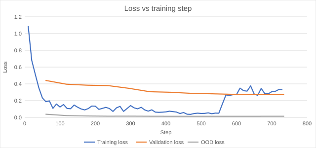
outputs/ostutor-lora-v3/ostutor-lora/train_metrics.json).| Quantity | Start (step 59) | End (step 735) |
|---|---|---|
| Validation loss (240 rows) | 0.4413 | 0.2713 |
| OOD loss (logged, never used for selection) | 0.0385 | 0.0139 |
| Training loss, epoch average | 0.1773 (last logged batches 0.31–0.33) | |
The validation loss fell at every one of 12 evaluations, so training was healthy. The training loss climbs from near zero to 0.31–0.33 after step ~550. The training order is engineered (rectifier interleaving, spaced replay), so the late batches have a different mix from the early ones; this was not investigated further, and validation kept falling through it. It does not show the model can solve problems. The OOD loss is low because that split is fully templated procedural text, yet the same model solves only 34 of 57 suite problems on its own. Teacher-forced loss measures how well the model predicts a correct answer it is shown, not whether it can produce one.
All six configurations were measured on the served path: llama.cpp with one adapter per server, greedy decoding, 57 items. They were graded with the corrected grader (D-003 and D-004, Section 5).
| Configuration | Correct | Accuracy | Delegated to simulator |
|---|---|---|---|
| Base (untuned) | 30/57 | 52.6% | 0 |
| Base + solver | 49/57 | 86.0% | 38 |
| v2.2 adapter | 19/57 | 33.3% | 0 |
| v2.2 + solver | 43/57 | 75.4% | 38 |
| v3 adapter | 34/57 | 59.6% | 0 |
| v3 + solver (deployed) | 57/57 | 100.0% | 38 |
Source: reports/g0/20261012-1429/regraded.md. As originally graded, base was 25/57; the 5 changed items are listed there.
| What is being tested | A → B | Right→wrong | Wrong→right | p | Verdict |
|---|---|---|---|---|---|
| Solver, on v3 | 34 → 57 | 0 | 23 | < 10⁻⁶ | significant |
| Solver, on the base | 30 → 49 | 0 | 19 | 4 × 10⁻⁶ | significant |
| Adapter, with the solver | 49 → 57 | 0 | 8 | 0.0078 | significant |
| Adapter, without the solver | 30 → 34 | 11 | 15 | 0.557 | not significant |
| v2.2 vs base, no solver | 30 → 19 | 17 | 6 | 0.035 | v2.2 significantly worse |
| v2.2 → v3, no solver | 19 → 34 | 2 | 17 | 0.0007 | significant |
Reading the ablation. The solver contributes most of the accuracy: +19 to +23 items, with zero losses. The adapter's measurable value is the 8 items the solver cannot take on its own (49 → 57, no losses). Every one of those 8 comes from the adapter answering the problems the solver declines. Without the solver, the adapter's +4 is indistinguishable from noise. v2.2 actively hurt the model, which is why v3 was rebuilt.
| Kind | n | Extraction | Delegated | Correct | Delegated but misread |
|---|---|---|---|---|---|
| Banker's request | 91 | 98.9% | 98.9% | 100.0% | 0 |
| Banker's safety | 96 | 96.9% | 96.9% | 100.0% | 0 |
| Disk scheduling | 80 | 88.8% | 100.0% | 92.5% | 9 |
| Free-space allocation | 74 | 100.0% | 100.0% | 100.0% | 0 |
| Page replacement | 86 | 98.8% | 100.0% | 100.0% | 1 |
| CPU scheduling | 91 | 98.9% | 98.9% | 98.9% | 0 |
| Address translation | 82 | 100.0% | 100.0% | 100.0% | 0 |
| All | 600 | 97.5% | 99.2% | 98.8% | 10 |
Source: reports/g0/20261012-1429/ood.json, summary.md. v3 + solver, end to end.
7 of the 600 answers were wrong. Six were disk problems where the stated range "0–299" was read as size 299 instead of 300 cylinders. The re-extraction diagnostic reproduced this off-by-one in 9 of 9 misread items. Grounding cannot catch it, because 299 does appear in the question. The seventh wrong answer was a scheduling problem that was not delegated.
| Benchmark (paired) | Base | v3 | Δ | R→W | W→R | p |
|---|---|---|---|---|---|---|
| General MMLU (400) | 80.25% | 79.50% | −0.75 pp | 13 | 10 | 0.678 |
| Adjacent CS (300) | 64.67% | 67.33% | +2.66 pp | 11 | 19 | 0.201 |
| OS theory MCQ (70) | 90.00% | 85.71% | −4.29 pp | 4 | 1 | 0.375 |
Source: reports/forgetting_v3_paired.json; p-values from reports/g0/historical_significance.md.
No effect is statistically detectable in either direction. That covers both the OS-theory dip and the adjacent-CS gain. The 70-item theory set is too small to decide a 4-point change, because the result hinges on 5 discordant questions; a 200-item set is planned. The base model scores identically, item for item, in two separate runs, so this evaluation is deterministic.
Ten probes were run, one per correction rule, and every v3 answer was read by hand. The checker produced 1 true positive, 2 false positives, 1 false negative and 6 true negatives, so precision is 1/3 and recall is 1/2. Both false alarms were correct negated sentences: the rules match "suffers from Belady's anomaly" without seeing the "does not" before it. The miss was seg_internal_frag. On a broader set of 70 theory answers it flagged 0. Source: reports/g0/20261012-1429/factcheck_v3.json.
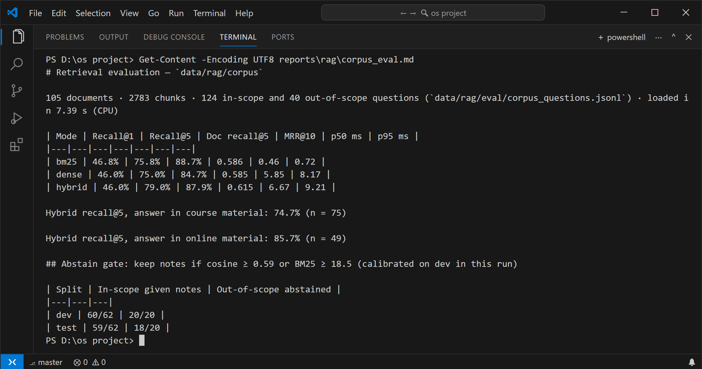
tools/rag_eval.py over the course corpus: 124 in-scope and 40 out-of-scope questions, 5 timed passes each (the first discarded).| Retrieval | Recall@1 | Recall@5 | Document recall@5 | MRR@10 | p95 latency |
|---|---|---|---|---|---|
| BM25 only | 46.8% | 75.8% | 88.7% | 0.586 | 0.7 ms |
| Dense only (MiniLM) | 46.0% | 75.0% | 84.7% | 0.585 | 7.8 ms |
| Hybrid (served) | 46.0% | 79.0% | 87.9% | 0.615 | 8.3 ms |
Source: reports/rag/corpus_eval.md. A hit is a chunk from the labelled document that contains the labelled evidence phrase. Latency is CPU-only, per query.
| "Not covered" gate (cosine ≥ 0.59 or BM25 ≥ 18.5) | In-scope questions given notes | Out-of-scope questions given none |
|---|---|---|
| Dev half (used to fit the gate) | 60/62 | 20/20 |
| Test half (not used for fitting) | 59/62 | 18/20 |
reports/rag/corpus_multilingual-e5-base_eval.md).All of these were measured on the served model: one adapter per server, greedy decoding, prompt cache off.
A. Theory MCQ, 200 items. The model is asked for the option letter, and retrieval uses only the question text, as a student would type it. This generated-letter protocol differs from the log-likelihood one behind the 90.00% and 85.71% in Section 4.5, so the base model was measured again here.
| Configuration | Correct | Accuracy | On the 130 new items |
|---|---|---|---|
| Base model, no retrieval | 185/200 | 92.50% | 121/130 |
| Base model, with retrieval | 186/200 | 93.00% | 121/130 |
| Fine-tuned v3, no retrieval | 186/200 | 93.00% | 121/130 |
| Fine-tuned v3, with retrieval (served) | 184/200 | 92.00% | 120/130 |
| Comparison | Right→wrong | Wrong→right | exact McNemar p |
|---|---|---|---|
| Base → v3 with retrieval | 5 | 4 | 1.000 |
| v3 → v3 with retrieval | 6 | 4 | 0.754 |
| Base → base with retrieval | 3 | 4 | 1.000 |
| Base → v3 (no retrieval) | 1 | 2 | 1.000 |
Source: reports/rag/e2e-20261012-2239/summary.md. The gate gave notes for 152 of the 200 questions.
B. Explain answers. The 62 test-half questions were answered by v3 with retrieval on.
| Measure | Result |
|---|---|
| Questions given notes by the gate | 59/62 |
| Notes included the labelled document | 46/59 |
| Answers citing at least one note | 50/59 |
| Invented citations (an [Sn] with no such note) | 0 |
| Answers flagged by the fact checker | 0 |
| Median prompt / answer length | 816 / 262 tokens |
| Median time to the full answer | 6.5 s |
| Decode speed, median / slowest (brief: ≥ 20 tok/s) | 42.9 / 41.6 tok/s |
C. Faithfulness. Every sentence carrying a citation was checked against the passage it cites: 143 sentence–passage pairs.
| Check | Supported |
|---|---|
| Base-model judge, all 143 pairs | 117/143 (81.8%) |
| Our own check of a random 40 of them, strict rule | 24/40 (60%) |
| Base-model judge on the same 40 | 29/40 (72.5%) |
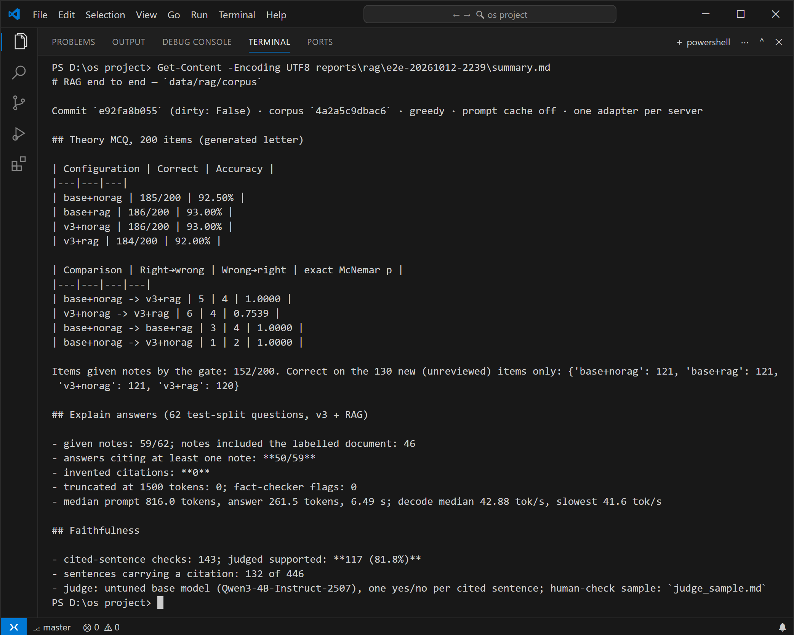
reports/rag/e2e-20261012-2239/summary.md.Reading the results.
These targets were set before the course-corpus run, partly by the brief and partly by us.
| Measure | Target | Measured | Met? |
|---|---|---|---|
| Retrieval p95 latency | ≤ 500 ms | 8.3 ms | Yes |
| Labelled question set | ≥ 100 items | 124 + 40 | Yes |
| Recall@5 (passage level) | ≥ 85% | 79.0% | No |
| Off-topic questions given no notes (test half) | ≥ 90% | 18/20 = 90% | Yes, at the limit |
| Answers citing a note, when given notes | ≥ 90% | 50/59 = 85% | No |
| Invented citations | 0 | 0 | Yes |
| Theory MCQ (200 items), v3 with retrieval | ≥ base | 92.0% vs 92.5% | No (one question; p = 1.0) |
| Faithfulness: human check of ≥ 30 claims | done | sample prepared; our check 24/40 | Pending the instructor's check |
| Generation speed with notes in the prompt | ≥ 20 tok/s | 41.6 tok/s slowest | Yes |
| Procedural suite, full system | 57/57 | unchanged: retrieval never runs for solvable problems | Yes (by design; tested) |
These are listed by impact. Each entry gives what happened, how it was found, and what was done about it. The first group distorted reported numbers, which is the most serious kind of error for a project whose claims rest on measurement.
| What went wrong | Effect | Fix / status |
|---|---|---|
| Void benchmark: v2.2 and v3 loaded into one llama-server and switched by per-request LoRA scale | Did not isolate the adapters: v3 scored 17/57 there and 36/57 alone, so every column of that benchmark was wrong | Declared void. One adapter per server, enforced by check_adapters, which refuses to measure otherwise |
| Unsupported claims in submitted PDFs: "final training loss 0.2710", and "the flips confirm genuine transfer" | 0.2710 appears in no training artifact. The transfer has p = 0.20 | Withdrawn in PROJECT_CONTEXT.md and in this report. The two earlier PDFs still need correcting (owner decision) |
Grader blind spots (D-003, D-004): LaTeX \quad separators, and a "Final Answer" line with a bare number | 5 correct base-model answers were graded wrong. That inflated the adapter's apparent no-solver gain from p = 0.557 to p = 0.136 | Fixed with regression tests. Re-grading 799 historical outputs changed 0 verdicts. Base-model failures are now hand-audited |
| Prompt cache made greedy decoding non-deterministic (D-005) | Same weights scored 36/57 and 34/57; only 23/57 outputs were identical | Evaluation sends cache_prompt: false (6/6 byte-identical repeats); serving keeps the cache. The deterministic rerun of G0 was interrupted and is still pending |
| Teacher-forced loss read as correctness | A low OOD loss (0.0139) was taken as evidence of generalisation | Loss is reported only as a training-health signal (Section 4.2) |
| What went wrong | Effect | Fix / status |
|---|---|---|
| Disk-size off-by-one in extraction ("0–299" read as 299) | 6 confidently wrong OOD answers. Grounding passes it because 299 is in the text | Not fixed: a student-facing change awaiting owner approval. Proposed: read an "a–b" range as b − a + 1 cylinders |
| Fact checker ignores negation and misses one of its own rules | Precision 1/3, recall 1/2 on the probes | Not fixed; awaiting approval. Proposed: a negation window before each pattern, and probes for every rule in the test suite |
| Fact checker silently returned the misconception when its redraft call failed (D-002) | A student would see "LRU suffers from Belady's anomaly" with no warning | Fixed: the correction is attached. The test was also non-hermetic (it passed only with the server up) |
| Fact checker runs only on non-streaming requests | Open WebUI streams by default, so in the UI the checker may never run. Not confirmed: the gateway logs for this deployment are empty | To verify. Retrieval and its sources footer work on both paths |
| The first RAG abstain gate used dense similarity alone | On our test notes, 4 of 10 off-topic questions retrieved OS passages | Replaced by a two-signal gate; its thresholds are now fitted per corpus on held-out questions |
| Thresholds fitted on one corpus do not carry over | The test-note thresholds would have given notes to 37 of the 40 off-topic questions on the course corpus | Refitted on the dev half (18.5); stored with the corpus in gate.json |
| OSTEP running headers inside passages | "OPERATING SYSTEMS [VERSION 1.01] WWW.OSTEP.ORG" appeared mid-sentence in 11 of the 27 sampled OSTEP passages | Lines repeated on a third of the pages are dropped |
| Ligatures in typeset PDFs | "file" never matched a query for "file" | NFKC normalisation |
| Sparse citations and a lenient judge | Only 132 of 446 answer sentences cite a note; the base-model judge rates 81.8% supported where our strict check finds about 60% | Not fixed. Proposed in Section 6.4 |
| One legacy Word file could not be converted | Word automation waited on an invisible dialog; the lab handout is missing from the corpus | Recorded as excluded; it can be added by saving it as .docx |
| What went wrong | Effect | Fix |
|---|---|---|
| More data was used to fix scheduling | Scheduling had the most rows (1,733) and the worst accuracy (42%). All 7 of 7 failures had perfect arithmetic and a wrong schedule | Diagnosed as architectural; fixed by delegation, not more data (64.9% → 100%) |
clean.py required ≥ 4 messages for tutoring | Silently discarded all 1,508 OS tutoring rows | Threshold < 2, plus a release gate requiring ≥ 300 OS tutoring rows |
| Naive 13-gram decontamination | Removed 58% of procedural rows (shared template text) | Distinctive n-grams only, plus parameter fingerprints |
Decontamination keyed on category == "procedural" | Removed 58% of OS tutoring rows | Keyed on whether a row has a fingerprint |
numbers_in() missed a number followed by "." | Grounding wrongly rejected valid extractions | Fixed with tests |
| v2.2's second epoch | Memorised more; v2.2 is significantly worse than base (p = 0.035) | v3 trains one epoch |
A memory_probe() before training | Bypassed Unsloth's checkpointing and reported a false OOM | Replaced by running the longest rows first through the real trainer |
busy("benchmark.py") matched run_full_benchmark.py. Polling for a free GPU between jobs also raced and crashed the next job. Fixed: match the full path, and require several consecutive clear polls.wiki-b-l-dy-s-anomaly and "Producer–consumer" lost its dash, which broke two question labels. Titles are now transliterated before the identifier is made.For each stage: what we would do differently with hindsight, or next, and the evidence that motivates it.
The biggest lesson is ordering. The project trained three adapters before it measured the untuned base on the same suite with the same grader. Done the other way round, the ablation would have shown on day one that the solver, not more fine-tuning, was the lever. A better flow:
This appendix gives the code shown in the figures of Section 3 as text, with the same line numbers.
@@LISTINGS@@| Numbers | File | Produced by |
|---|---|---|
| Dataset composition, pipeline counts, gates | DATASET_CARD.md, reports/manifest.json | python -m ostutor.build |
| Training and validation loss | outputs/ostutor-lora-v3/ostutor-lora/train_metrics.json | train/kaggle_train.py |
| Suite, all six configurations, re-graded | reports/g0/20261012-1429/regraded.md | tools/g0_ablation.py, tools/g0_regrade.py |
| OOD holdout, 600 items | reports/g0/20261012-1429/ood.json | tools/g0_ablation.py |
| Disk off-by-one, cache determinism | reports/g0/20261012-1429/diagnostics.json | tools/g0_diagnostics.py |
| Fact-checker probes | reports/g0/20261012-1429/factcheck_v3.json | tools/g0_ablation.py |
| Forgetting, paired | reports/forgetting_v3_paired.json, reports/g0/historical_significance.md | tools/run_forgetting_eval.py, tools/significance_history.py |
| RAG corpus and exclusions | data/rag/corpus/manifest.json | tools/import_rag_sources.py, tools/fetch_open_os_sources.py |
| RAG retrieval and the gate | reports/rag/corpus_eval.md, data/rag/corpus/gate.json | tools/rag_eval.py --calibrate |
| Embedder comparison | reports/rag/corpus_multilingual-e5-base_eval.md | tools/rag_eval.py --embed-model |
| RAG end to end, faithfulness | reports/rag/e2e-20261012-2239/ (summary.md, judge_sample_engineer_check.json) | tools/rag_e2e.py |
| Generation speed 26.9 tok/s (wall clock, full stack) | PROJECT_CONTEXT.md Section 7 | Served stack, 300 tokens |
| Engineering decisions | docs/DECISIONS.md (D-001 … D-008) | — |
# build the dataset (11 stages, 19 release gates) python -m ostutor.build # tests python tools/test_pipeline.py python tools/test_router.py python tools/test_g0.py python tools/test_rag.py serve/.venv-webui/Scripts/python serve/test_gateway.py # evaluation python tools/g0_ablation.py # problem suite, OOD holdout, fact checker (GPU) python -m ostutor.rag.ingest data/rag/corpus # build the retrieval index (CPU) python tools/rag_eval.py data/rag/corpus --calibrate # retrieval + gate (CPU) python tools/rag_e2e.py data/rag/corpus # MCQ, explain answers, faithfulness (GPU) # serve the tutor with retrieval switched on $env:OSTUTOR_RAG = "data/rag/corpus" powershell -File serve\start_tutor.ps1